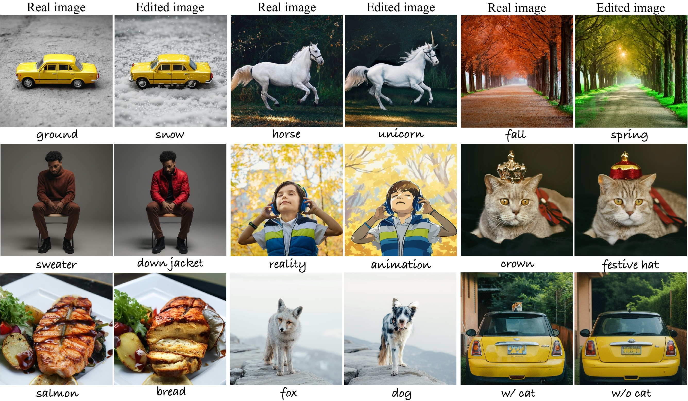
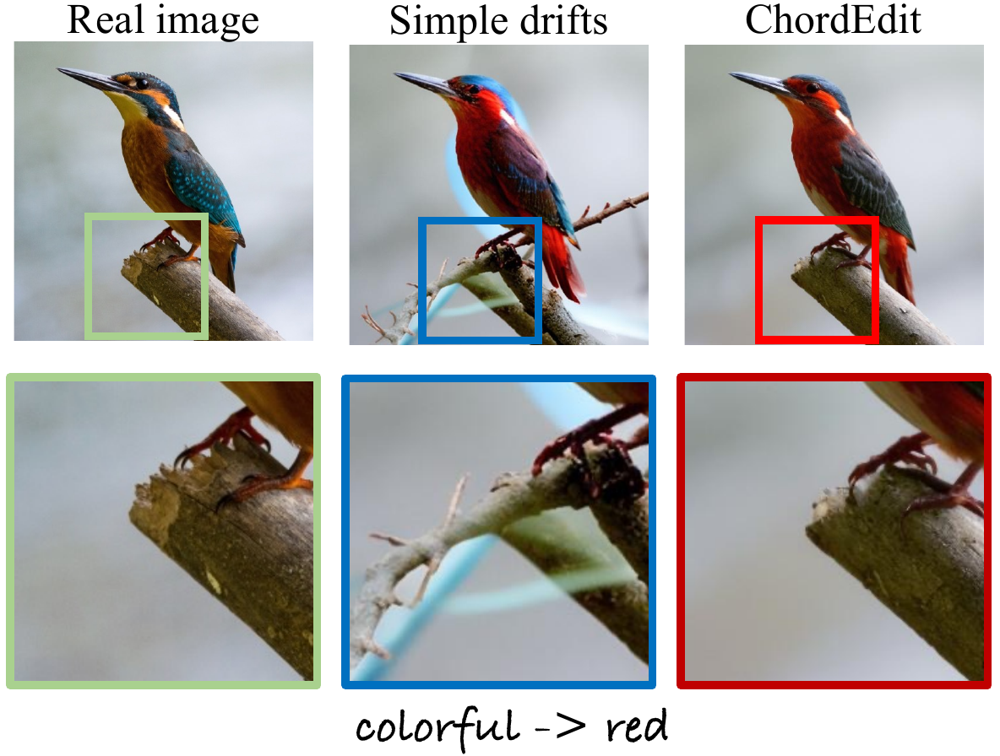
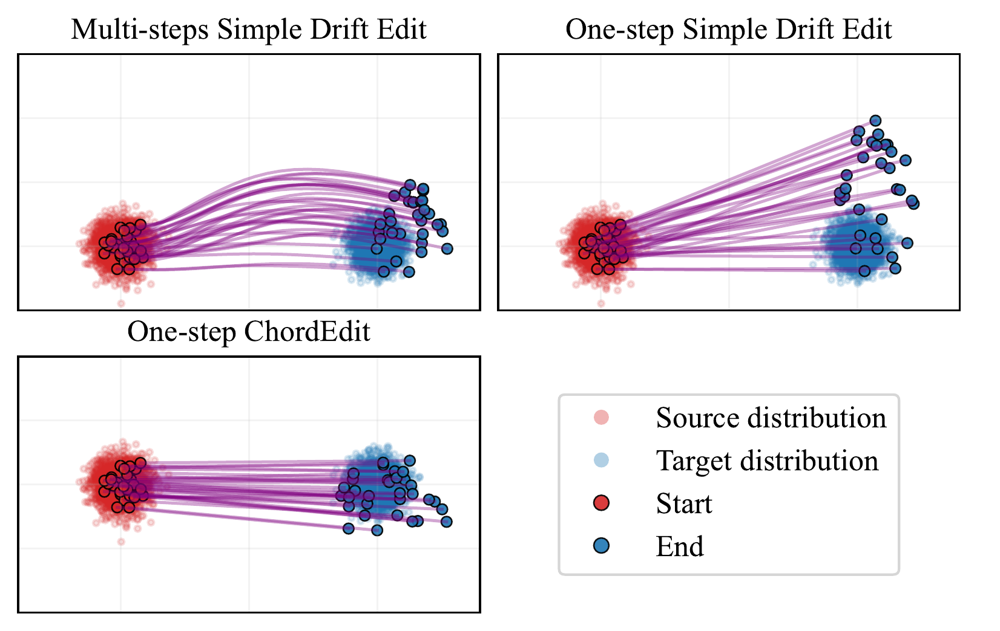
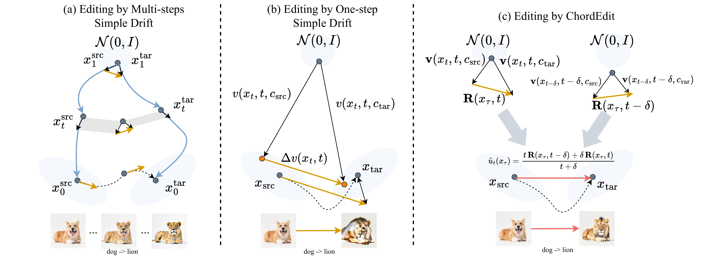
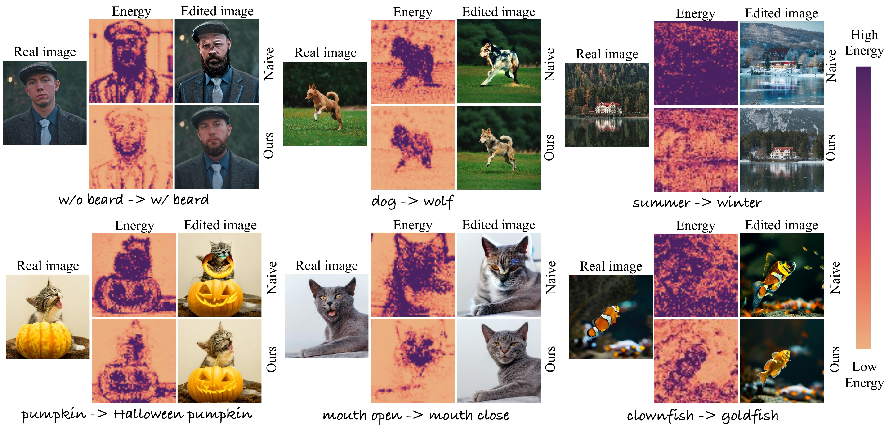
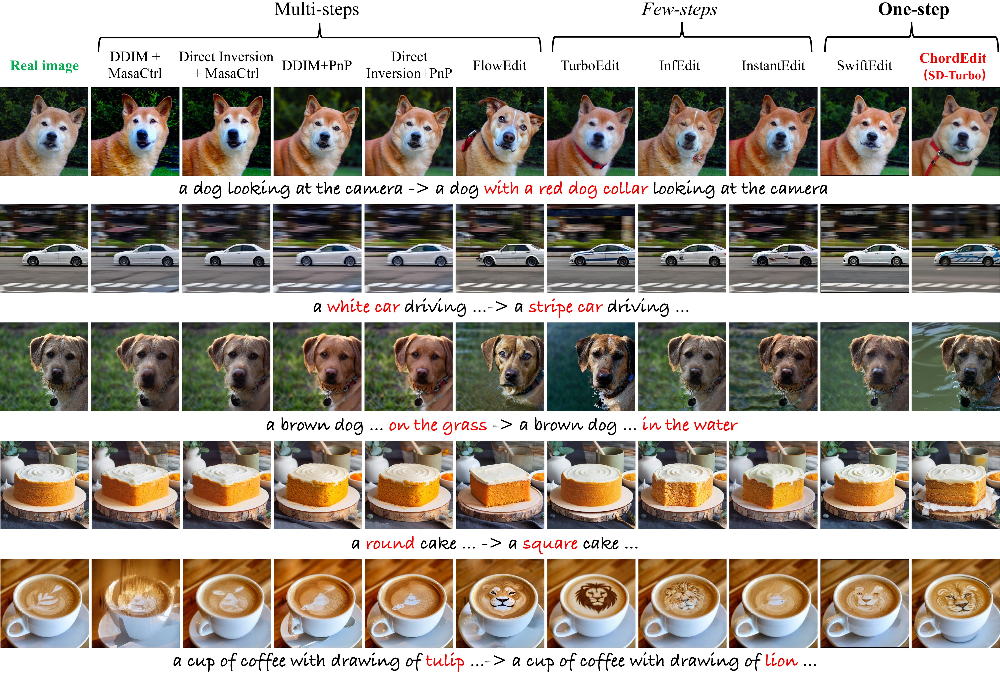

🎮 费曼一分钟（通俗速读）
一步文生图模型（如 SD-Turbo、SwiftBrush-v2、InstaFlow）把原本需要几十步的扩散蒸馏成一次前向就能出图——合成速度极快，自然让人期待「实时编辑」。但把传统编辑套路（源/目标 prompt 的 drift 差分）硬塞进一步模型会彻底翻车：物体严重扭曲、背景碎裂——因为 naive 编辑场是两个大幅度、发散轨迹的算术差，能量高、方差大，单步大积分误差累积致命。
ChordEdit 换视角：把编辑看作从源分布到目标分布的动态最优传输（OT）问题，用时间加权的 Chord Control Field 替代瞬时 naive 差分——相当于对观测场 $\mathbf{R}$ 做因果核平滑，$L^2$ 收缩、能量更低、Euler 单步更稳。方法免训练、免 inversion，黑盒查询模型 velocity/noise 即可；可选 proximal refinement 再增强语义。PIE-bench 上 SD-Turbo 配置 0.38s、NFE=2、PSNR 22.20、CLIP-Edited 22.96；去掉 prox 仅 transport 则 NFE=1、0.20s、PSNR 23.89，背景保真更强。
📄 原文 Figure 1：ChordEdit 编辑能力展示（Teaser）

Abstract
The advent of one-step text-to-image (T2I) models offers unprecedented synthesis speed. However, their application to text-guided image editing remains severely hampered, as forcing existing training-free editors into a single inference step fails — manifesting as severe object distortion and critical loss of consistency in non-edited regions, resulting from high-energy, erratic trajectories produced by naive vector arithmetic on the models' structured fields.
We introduce ChordEdit, a model-agnostic, training-free, and inversion-free method for high-fidelity one-step editing. We recast editing as a transport problem between source and target distributions defined by prompts. Leveraging dynamic optimal transport, we derive a low-energy control strategy yielding a smoothed, variance-reduced Chord Control Field that can be traversed in a single, large integration step.
一步文生图模型带来了前所未有的合成速度，但其用于文本引导图像编辑仍严重受阻——将现有免训练编辑器强行压到单步推理会失败，表现为严重物体扭曲与非编辑区域一致性丧失，根因是 naive 向量算术在结构化场上产生高能量、不稳定轨迹。
我们提出 ChordEdit——一种 model-agnostic、免训练、免 inversion 的高保真一步编辑方法。将编辑重述为源/目标 prompt 定义的两个分布之间的传输问题；借助动态最优传输推导低能量控制策略，得到平滑、降方差的 Chord Control Field，可在单步大积分中稳定穿越。
段落功能
点出一步 T2I 与一步编辑之间的鸿沟（naive drift 差分失败），宣告 ChordEdit 用 OT + 平滑控制场填补空白。
逻辑角色
论证链起点：问题（单步编辑不稳定）→ 解法（低能量 Chord 场）→ 承诺（实时、轻量、精确）。
论证技巧 / 潜在漏洞
技巧：摘要同时锚定「理论（dynamic OT）」「工程（training-free / inversion-free）」「效率（single step）」。漏洞：「real-time」依赖特定 GPU 与 SD-Turbo 等蒸馏模型，泛化到其他编辑任务未在摘要展开。
1. Introduction
One-step T2I models such as SD-Turbo, SwiftBrush-v2 and InstaFlow distill large diffusion models into a compact, single-step pathway, promising truly interactive applications. This progress raises the expectation that real-time capability can be leveraged for text-guided image editing.
However, this promise remains unmet. Existing one-step method SwiftEdit achieves speed by training dedicated networks, sacrificing model-agnostic flexibility. The training-free alternative computes an editing field by differencing drifts conditioned on source and target prompts — effective in multi-step generators but fails in one-step models: severe object distortion and background disintegration (Figure 3).
SD-Turbo、SwiftBrush-v2、InstaFlow 等一步 T2I 模型将大扩散模型蒸馏为紧凑单步通路，承诺真正交互式应用，自然让人期待实时文本引导编辑。
然而这一承诺尚未兑现。SwiftEdit 等一步方法靠训练专用网络换速度，牺牲 model-agnostic 灵活性。免训练方案用源/目标 prompt 条件 drift 的差分构造编辑场——多步生成器上有效，但在一步模型上失败：物体严重扭曲、背景解体（Fig.3）。
段落功能
建立「一步 T2I 已成熟 vs 一步编辑仍失败」的反差；区分训练式（SwiftEdit）与免训练（InfEdit/FlowEdit 风格）两条路线的局限。
逻辑角色
问题语境：为何 naive drift 差分在蒸馏模型上崩溃？预告根因——文本条件到向量场的映射高度非线性，差分场能量过高。
The root cause: naive editing field is the arithmetic difference of two large-magnitude, divergent trajectories — an erratic, high-energy control field. A single large integration step accumulates significant error.
We introduce ChordEdit, recasting editing from dynamic OT perspective, seeking a low-energy chord to transport source to target. Our Chord Control Field is a time-weighted average of source and target drifts, acting as temporal smoothing. Optional proximal refinement enhances semantics. Results on PIE-bench demonstrate state-of-the-art efficiency with high background preservation.
根因：naive 编辑场是两个大幅度、发散轨迹的算术差——高能量、不稳定控制场；单步大积分误差累积导致失真。
我们提出 ChordEdit，从动态 OT 视角重述编辑，寻找低能量「弦」传输源到目标。Chord Control Field 是源/目标 drift 的时间加权平均，充当时间平滑算子；可选 proximal refinement 增强语义。PIE-bench 实验表明 SOTA 级效率与背景保真。
段落功能
诊断 naive 场 → 宣告 Chord 平滑场 + OT 框架 → 预告 PIE-bench 证据。
论证技巧 / 潜在漏洞
技巧：把「多步平均才稳定」的直觉形式化为时间窗口 $[t-\delta,t]$ 上的核平滑。漏洞：OT 视角是启发式测量模型（Eq.4.2），非严格求解 Benamou–Brenier 问题。
📄 原文 Figure 3：Naive Simple Drift 失败 vs ChordEdit

3. Preliminaries
A pre-trained T2I model induces conditional probability flow $\frac{dx_t}{dt}=v(x_t,t,c)$. Given prompts $c_{\rm src}, c_{\rm tar}$ and source image $x_{\rm src}:=x_1$, editing transports toward target $x_{\rm tar}$ via instantaneous residual:
$$\Delta v(x_t,t)=v(x_t,t,c_{\rm tar})-v(x_t,t,c_{\rm src}) \quad\text{(Eq. 3.2)}$$
In practice we anchor at clean source $x_\tau:=x_1$ and query the model at synthetic noisy proxy $z\sim K_t(\cdot\mid x_\tau)$. The observable proxy field is:
$$\mathbf{R}(x_\tau,t)=\mathbb{E}_{z\sim K_t(\cdot\mid x_\tau)}\!\big[\,\mathcal{B}_t\,\Delta Q(z,t)\,\big] \quad\text{(Eq. 3.3)}$$
where $\Delta Q=Q(\cdot,c_{\rm tar})-Q(\cdot,c_{\rm src})$ and $\mathcal{B}_t$ is a time-only linear map (e.g. for SD-Turbo: $Q=\hat\epsilon_\theta$, $\mathcal{B}_t=A_t^{(\epsilon)}$).
预训练 T2I 模型诱导条件概率流 $\frac{dx_t}{dt}=v(x_t,t,c)$。给定源/目标 prompt 与源图 $x_{\rm src}:=x_1$，编辑通过瞬时残差传输：
$$\Delta v(x_t,t)=v(x_t,t,c_{\rm tar})-v(x_t,t,c_{\rm src}) \quad\text{（式 3.2）}$$
实践中锚定干净源状态 $x_\tau:=x_1$，在合成噪声代理 $z\sim K_t(\cdot\mid x_\tau)$ 上查询模型。可观测代理场为：
$$\mathbf{R}(x_\tau,t)=\mathbb{E}_{z\sim K_t(\cdot\mid x_\tau)}\!\big[\,\mathcal{B}_t\,\Delta Q(z,t)\,\big] \quad\text{（式 3.3）}$$
其中 $\Delta Q$ 为源/目标模型输出差，$\mathcal{B}_t$ 为仅依赖时间的线性映射（SD-Turbo 下 $Q=\hat\epsilon_\theta$）。
编辑问题设定（自绘）
flowchart LR XSRC["x_src ~ p₁(·|c_src)
源图"] -->|"理想: 修改流场"| XTAR["x_tar ~ p₀(·|c_tar)
编辑结果"] VSRC["v(x,t,c_src)"] --> Dv["Δv = v_tar − v_src
naive 差分场"] VTAR["v(x,t,c_tar)"] --> Dv Dv -->|"一步积分
高能量→失败"| FAIL["扭曲 / 背景碎"]
逻辑角色
为 §4 Chord 场提供符号：$x_\tau$ 锚定、$\mathbf{R}$ 可查询、$\mathcal{B}_t$ 统一不同参数化（noise / velocity）。
4. ChordEdit — Chord Control Field & Algorithm
Dynamic OT view: ideal editing field $u_t$ minimizes Benamou–Brenier kinetic energy subject to continuity equation. We only observe $\mathbf{R}(x_\tau,t)=u_t+\varepsilon_t$ (measurement model). Naive control $u_{\rm nai}=\mathbf{R}$ is high-energy and unstable for single-step integration.
To obtain low-energy estimator $\hat u_t$, minimize quadratic surrogate over window $[t-\delta,t]$:
$$\Phi_t(u;x_\tau)=t\,\|u-\hat u_{t-\delta}(x_\tau)\|^2+\int_{t-\delta}^{t}\!\|u-\mathbf{R}(x_\tau,\xi)\|^2\,d\xi \quad\text{(Eq. 4.3)}$$
Setting $\nabla_u\Phi_t=0$ and using first-order causal approximations yields the Chord Control Field:
$$\hat u_t(x_\tau)=\frac{t\,\mathbf{R}(x_\tau,t-\delta)+\delta\,\mathbf{R}(x_\tau,t)}{t+\delta} \quad\text{(Eq. 4.5)}$$
By Jensen's inequality, $\int\!\|\hat u\|^2\leq\int\!\|\mathbf{R}\|^2$ — an $L^2$ contraction suppressing high-energy spikes; consistency proxy $\mathcal{C}(\hat u)\leq\mathcal{C}(\mathbf{R})$ tightens Euler error for $h=1$ step.
动态 OT 视角：理想编辑场 $u_t$ 最小化 Benamou–Brenier 动能并满足连续性方程；实际只能观测 $\mathbf{R}=u_t+\varepsilon_t$。Naive 控制 $u_{\rm nai}=\mathbf{R}$ 能量高，单步积分不稳定。
为得到低能量估计 $\hat u_t$，在窗口 $[t-\delta,t]$ 上最小化二次 surrogate：
$$\Phi_t(u;x_\tau)=t\,\|u-\hat u_{t-\delta}\|^2+\int_{t-\delta}^{t}\!\|u-\mathbf{R}(x_\tau,\xi)\|^2\,d\xi \quad\text{（式 4.3）}$$
令 $\nabla_u\Phi_t=0$ 并做一阶因果近似，得 Chord Control Field：
$$\hat u_t(x_\tau)=\frac{t\,\mathbf{R}(x_\tau,t-\delta)+\delta\,\mathbf{R}(x_\tau,t)}{t+\delta} \quad\text{（式 4.5）}$$
Jensen 不等式保证 $L^2$ 收缩；一致性代理 $\mathcal{C}(\hat u)\leq\mathcal{C}(\mathbf{R})$ 收紧单步 Euler 误差界。
Chord 场 vs Naive 场（自绘）
flowchart TB R1["R(x_τ, t−δ)
较早时刻观测"] --> CCF["Chord Control Field
û = (t·R_{t−δ} + δ·R_t)/(t+δ)"] R2["R(x_τ, t)
当前时刻观测"] --> CCF CCF -->|"x_pred = x_in + λ·û
1-NFE transport"| XPRED["x_pred"] XPRED -->|"可选 prox
1-NFE"| OUT["x_tar"] NAIVE["δ=0: R only
高能量"] -.->|"单步失败"| FAIL["失真"]
设计取舍
关键 trick：不增加模型调用次数（R 在 $t$ 与 $t-\delta$ 两次查询可 batch 并行），用时间加权平均换数值稳定性——多步编辑里「迭代平均」的单步等价物。
Proximal refinement (optional):
$$\operatorname{prox}(x^{\rm pred},t_c,c_{\rm tar})=\mathcal{B}_{t_c}\,Q(x^{\rm pred},t_c,c_{\rm tar}) \quad\text{(Eq. 4.7)}$$
Algorithm 1 (simplified):
1. $x_{\rm in}\leftarrow x_{\rm src}$
2. $\hat u\leftarrow\frac{t\,\mathbf{R}(x_{\rm in},t-\delta)+\delta\,\mathbf{R}(x_{\rm in},t)}{t+\delta}$
3. $x^{\rm pred}\leftarrow x_{\rm in}+\lambda\,\hat u$
4. $x_{\rm tar}\leftarrow\operatorname{prox}(x^{\rm pred},t_c,c_{\rm tar})$ (optional)
Default: $n=1$, $t=0.90$, $\delta=0.15$, $\lambda=1.00$, $t_c=0.30$ — transport-only is 1-NFE; full pipeline is 2-NFE.
Proximal refinement（可选）：
$$\operatorname{prox}(x^{\rm pred},t_c,c_{\rm tar})=\mathcal{B}_{t_c}\,Q(x^{\rm pred},t_c,c_{\rm tar}) \quad\text{（式 4.7）}$$
算法 1（简化）：
1. 初始化 $x_{\rm in}\leftarrow x_{\rm src}$
2. 计算 Chord 场 $\hat u$（式 4.5）
3. 一步传输 $x^{\rm pred}\leftarrow x_{\rm in}+\lambda\,\hat u$
4. 可选 prox 增强语义 → $x_{\rm tar}$
默认超参：$t=0.90$, $\delta=0.15$, $\lambda=1.00$, $t_c=0.30$；仅 transport 为 1-NFE，完整流程 2-NFE。
段落功能
分离「结构保真 transport」（高 PSNR）与「语义增强 prox」（高 CLIP-Edited）——Table 2 消融验证：w/o prox PSNR 23.89，w/ prox CLIP-Edited 22.96。
逻辑角色
算法段落把理论场落地为 VAE latent 空间 1–2 次前向，强调 parallel batch 与黑盒接口。
📄 原文 Figure 5：2D Toy 分布传输 — Naive vs ChordEdit

📄 原文 Figure 2：PIE-bench 方法对比（MAIN · 背景 PSNR / CLIP / Runtime）

5–6. Experiments & Ablation
We evaluate on PIE-bench (700 samples, 512×512, 10 editing categories). Metrics: PSNR/MSE on non-edited regions; CLIP-Whole and CLIP-Edited for semantic alignment. Single NVIDIA Titan 24GB GPU.
Table 1 compares multi-step, few-step, and one-step editors. ChordEdit achieves state-of-the-art efficiency — less than half VRAM of SwiftEdit on same model, 19× faster than FlowEdit, 3.4× faster than fastest few-step alternative.
在 PIE-bench（700 样本、512×512、10 类编辑）上评估；非编辑区 PSNR/MSE 衡量背景保真，CLIP-Whole / CLIP-Edited 衡量语义对齐。单卡 Titan 24GB。
表 1 对比多步/少步/一步编辑器。ChordEdit 效率 SOTA——同模型 VRAM 不到 SwiftEdit 一半，比 FlowEdit 快 19×，比最快少步方法快 3.4×。
| Method | PSNR↑ | CLIP-Edited↑ | NFE↓ | Runtime↓ | VRAM↓ | T-free |
|---|---|---|---|---|---|---|
| SwiftEdit (SwiftBrush-v2) | 21.71 | 21.85 | 2 | 0.54s | 15060 MiB | ✗ |
| ChordEdit w/o prox (SD-Turbo) | 23.89 | 21.87 | 1 | 0.20s | 6988 MiB | ✓ |
| ChordEdit (SD-Turbo) | 22.20 | 22.96 | 2 | 0.38s | 6988 MiB | ✓ |
- 论点↔证据：w/o prox 验证 CCF 核心——NFE=1 仍 PSNR 23.89；完整版 prox 将 CLIP-Edited 提至 22.96，综合最优。
- vs SwiftEdit：免训练、VRAM 减半（6988 vs 15060 MiB）、更快（0.38s vs 0.54s），语义 CLIP-Edited 更高（22.96 vs 21.85）。
- 公平性：各方法用官方指定 backbone；一步类在 SwiftBrush-v2 上也有直接对比（ChordEdit PSNR 22.04 vs SwiftEdit 21.71）。
Ablation — Chord Control Field ($\delta$): Setting $\delta=0$ degenerates to naive baseline. As step count $S\to 1$, naive field energy spikes and PSNR collapses; CCF ($\delta=0.15$) remains stable and strictly Pareto-dominates naive on perceptual-semantic trade-off (Figure 9).
Noise samples: ChordEdit with $n=1$ is seed-robust (CLIP CoV 0.20%, PSNR CoV 0.07%); increasing $n$ yields negligible marginal returns — intrinsic variance reduction from smoothing.
消融 — Chord Control Field（$\delta$）：$\delta=0$ 退化为 naive baseline。步数 $S\to 1$ 时 naive 场能量飙升、PSNR 崩溃；CCF（$\delta=0.15$）保持稳定，在感知-语义权衡上严格 Pareto 支配 naive（Fig.9）。
噪声样本数：$n=1$ 即 seed 鲁棒；增加 $n$ 边际收益可忽略——平滑构造自带降方差。
段落功能
§6.1 用 kinetic energy + PSNR 曲线证明「单步需要低能量场」；§6.2 证明 MC 多噪声非必需；§6.3 Table 2 分离 transport vs prox。
论证技巧
把 δ 作为唯一旋钮连接理论与实验：δ→0 即 reproducing naive failure，δ=0.15 即 full ChordEdit。
📄 原文 Figure 4 / Fig.8：编辑场稳定性与能量可视化消融

📄 原文 Figure 7：定性 SOTA 对比网格

7. Conclusion
We introduced ChordEdit, a training-free, inversion-free framework solving one-step editing instability. Our Chord Control Field replaces naive high-energy drift difference with temporal smoothing, enabling a single large integration step while preserving non-edited regions.
ChordEdit achieves state-of-the-art efficiency — runtime 0.38s, low VRAM — without sacrificing quality: high fidelity and strong semantic alignment, robustly model-agnostic and seed-insensitive with a single noise sample. True real-time, high-fidelity generative image editing.
我们提出 ChordEdit——免训练、免 inversion 的框架，解决一步编辑不稳定性。Chord Control Field 以时间平滑替代 naive 高能量 drift 差分，支持单步大积分并保非编辑区域。
ChordEdit 效率 SOTA——0.38s 运行时、低 VRAM——且不牺牲质量：高保真、强语义对齐，model-agnostic 且单噪声样本 seed 不敏感。实现真正实时、高保真、一致的生成式图像编辑。
段落功能
收束 OT + CCF + prox 模块化贡献，强调效率与质量兼得。
逻辑角色
论证链终点——从 Intro 的「一步编辑失败」到「0.38s 实时高保真编辑」闭环。
论证技巧 / 潜在漏洞
技巧：结论同时_claim 效率、质量、鲁棒性、model-agnostic 四轴。漏洞：PIE-bench 以 instruction editing 为主；复杂局部编辑、视频、3D 未涉及；社会影响仅附录简述。
符号速查表
| 符号 | 含义 |
|---|---|
| $x_t,\; t\in[0,1]$ | 时刻 $t$ 的图像状态；$t=1$ 为数据端，$t=0$ 为先验端 |
| $c_{\rm src},\,c_{\rm tar}$ | 源 / 目标文本 prompt 条件 |
| $x_{\rm src}=x_1,\;x_\tau$ | 源图（干净锚点状态） |
| $v(x_t,t,c)$ | 条件概率流 drift |
| $\Delta v$ | Naive 编辑残差 $v(\cdot,c_{\rm tar})-v(\cdot,c_{\rm src})$（式 3.2） |
| $Q(z,t,c),\;\mathcal{B}_t$ | 模型可观测输出与时间线性映射（noise/velocity 统一接口） |
| $\mathbf{R}(x_\tau,t)$ | 可观测代理编辑场 $\mathbb{E}[\mathcal{B}_t\Delta Q]$（式 3.3） |
| $\hat u_t$ | Chord Control Field（式 4.5），$\delta=0$ 时退化为 naive $\mathbf{R}$ |
| $\delta,\;t,\;\lambda,\;t_c$ | 平滑窗口、传输时刻、步长缩放、prox 时刻（默认 0.15, 0.90, 1.00, 0.30） |
| $\operatorname{prox}(\cdot)$ | 可选 proximal refinement（式 4.7），+1 NFE 增强语义 |
| NFE | Number of Function Evaluations；transport=1，+prox=2 |
论证结构总览
→ 论点（动态 OT 视角 + Chord Control Field 时间加权平滑 → 低能量、单步稳定）
→ 方法（Eq.4.5 CCF + 可选 prox；Algorithm 1；黑盒 model-agnostic）
→ 证据（PIE-bench Table 1：ChordEdit SD-Turbo PSNR 22.20 / CLIP-Edited 22.96 / 0.38s / NFE 2；w/o prox PSNR 23.89 / NFE 1 / 0.20s；vs SwiftEdit 21.71 / 需训练 / 0.54s）
→ 消融（δ=0 能量飙升 PSNR 崩；n=1 seed 鲁棒；transport vs prox 解耦）
→ 结论（真正实时高保真一步编辑，CVPR 2026 Oral）
核心主张（一句话）
通过对 naive 编辑场做 OT 启发的因果时间平滑（Chord Control Field），可在免训练、免 inversion 的前提下，于一步 T2I 模型上实现稳定、低能量、实时的文本引导图像编辑。
来源：arXiv:2602.19083 · chordedit.github.io · 生成工具：paper-logic-reading skill（三栏版）
🧩 结构化十问（AI 解构）
让 AI 当助教，从十个角度提取论文骨架。
Q1 · 论文试图解决什么问题？
Q2 · 这是否是一个新问题？
Q3 · 要验证什么科学假设？
Q4 · 有哪些相关研究？如何归类？
- 一步 T2I：SD-Turbo、InstaFlow、SwiftBrush-v2、LCM
- 免训练编辑：InfEdit、FlowEdit、DiffEdit、PnP Inversion
- 一步训练式编辑：SwiftEdit（专用 inversion 网络）
- OT / 流：Benamou–Brenier dynamic OT、Flow Matching
Q5 · 解决方案的关键是什么？
Q6 · 实验是如何设计的？
Q7 · 用什么数据集评估？代码开源吗？
Q8 · 实验结果是否很好支持了假设？
Q9 · 这篇论文到底有什么贡献？
Q10 · 下一步可以做什么？
🔬 深挖追问
第一性原理 · 本质
编辑的本质是在固定源图锚点下，把「源 prompt 条件流」运输到「目标 prompt 条件流」。多步方法靠迭代小步隐式平均高方差场；一步模型没有迭代预算，必须显式构造低能量、低曲率的控制场——ChordEdit 用时间窗口平滑实现这一平均。
第一性原理 · 与 FlowEdit / InfEdit 关系
InfEdit / FlowEdit 的 drift 差分在多步积分下稳定——每步小，误差可控。蒸馏一步模型把「路径长度」压到 1，等价于 Euler 步长 $h=1$；naive 场的 Lipschitz 常数过大时，显式 Euler 全局误差 $O(h)$ 仍可能很大。CCF 通过降低 $\|\nabla_x u\|_\infty$ 和 $\|u\|_\infty$ 扩大稳定步长 margin。
第一性原理 · 数学基础
Benamou–Brenier 动态 OT（式 4.1）、连续性方程、Jensen $L^2$ 收缩、一致性代理 $\mathcal{C}(u)=\|\partial_t u\|_\infty+\|\nabla_x u\|_\infty\|u\|_\infty$ 与 Appendix Thm. C.6 的 $O(h)$ 全局误差界。Eq.4.5 是因果核 $K_\delta$ 与 $\mathbf{R}$ 的卷积，$\delta$ 控制 bias-variance：大 δ 更稳但语义弱。
批判性思维 · 我们还没问的根本问题（盲区）
- OT 严格性：$\mathbf{R}=u+\varepsilon$ 是 post-hoc 测量模型，未从 T2I 训练目标推导；CCF 是最小二乘平滑而非 Wasserstein geodesic。
- 超参敏感性：$t,\delta,\lambda,t_c$ 默认 0.90/0.15/1.00/0.30——跨数据集/分辨率是否需重调？Appendix 有分析但主文依赖 PIE-bench 调参。
- Prox 与 PSNR 权衡：完整 ChordEdit PSNR 22.20 低于 w/o prox 23.89——用户若只要背景保真是否应默认关掉 prox？
- 编辑类型边界：PIE-bench 以全局语义替换为主；精细几何编辑、文字编辑、多人脸 ID 保持未系统测试。
- 与 SwiftEdit 公平性：SwiftEdit 需训练但可能随 teacher 升级；ChordEdit 黑盒优势在新蒸馏模型即插即用，长期维护成本更低。
- 伦理：实时高保真编辑降低 deepfake 门槛；正文仅简短 acknowledge，无技术层缓解（水印/检测）。